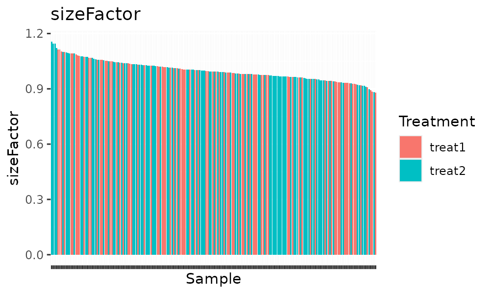

Visualization
Kevin Stachelek
University of Southern Californiakevin.stachelek@gmail.com
Bhavana Bhat
University of Southern Californiabbhat@usc.edu
31 October 2024
Source:vignettes/visualization.Rmd
visualization.RmdThis article demonstrates the data visualization tools in chevreulPlot. We’ll introduce included functions, their usage, and resulting plots
First step is to load chevreulPlot package and all other packages required
library(chevreulPlot)
library(scater)
library(scran)
library(clustree)
library(patchwork)
library(chevreuldata)
chevreul_sce <- human_gene_transcript_sce()The different plotting functions within chevreulPlot allows for visualization of data, these plots can be customized for interactive or non-interactive display.
Plot expression
Expression of a feature (genes or transcripts) can be plotted on a given embedding resulting in an interactive feature plot.
When plotting only one feature, output is identical to
SingleCellExperiment::FeaturePlot
plot_feature_on_embedding(chevreul_sce,
embedding = "UMAP",
features = "NRL", return_plotly = FALSE
)
An interactive output plot can be generated by specifying
return_plotly = TRUE which uses ggplotly
allowing identification of individual cells for further
investigation.
Plot read count or other QC measurements
The plot_colData_histogram function displays a histogram
of cell read counts colored according to a categorical variable using
the argument fill_by. Here we can see that read counts for
this dataset are not distinctly different depending on the method of
organoid preparation used (Kuwahara or Zhong)
plot_colData_histogram(chevreul_sce,
group_by = "nCount_RNA",
fill_by = "Prep.Method"
)
Plot metadata variable
Make an interactive scatter plot of a metadata variable, where each point in the plot represents a cell whose position on the plot is given by the cell embedding determined by the dimensional reduction technique by default, “UMAP”. The group argument specifies the colData variable by which to group the cells by, by default, “batch”.
plot_colData_on_embedding(chevreul_sce,
group = "gene_snn_res.0.2",
embedding = "UMAP"
)
This function utilizes a SingleCellExperiment function,
DimPlot(), as sub function which produces the dimensional
reduction plot. The interactive parameter, return_plotly,
in plot_colData_on_embedding when set to TRUE will convert the plot into
an interactive plot using ggplotly function from R’s plotly package
Plot cluster marker genes
Marker genes of louvain clusters or additional experimental metadata
can be plotted using plot_marker_features. This allows
visualization of n marker features grouped by the metadata of interest.
Marker genes are identified using wilcoxon rank-sum test as implemented
in presto. In the resulting dot plot the size of the dot
corresponds to the percentage of cells expressing the feature in each
cluster and the color represents the average expression level of the
feature.
plot_marker_features(chevreul_sce,
group_by = "gene_snn_res.0.2",
marker_method = "wilcox"
)
Plotting transcript composition
plot_transcript_composition() plots the proportion of
reads of a given gene map to each transcript. The gene of interest is
specified by the argument ‘gene_symbol’.